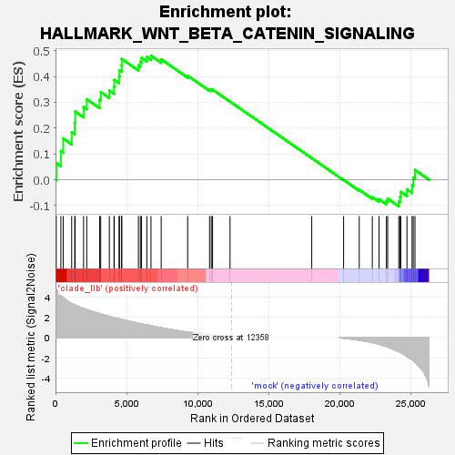
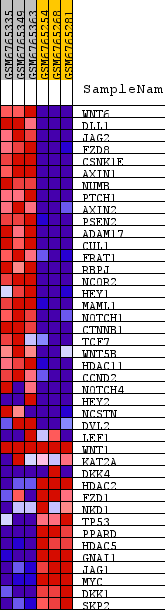
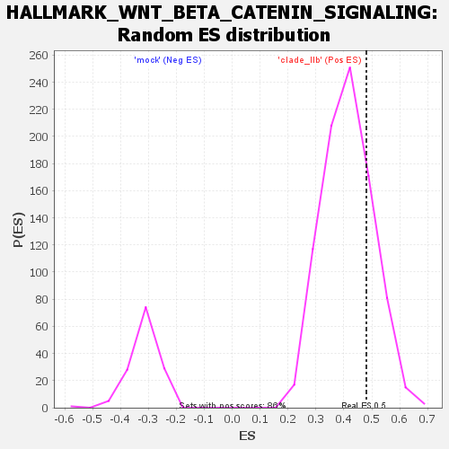

| Dataset | kera_ex_collapsed_to_symbols.kera_pheno.cls #clade_IIb_versus_mock.kera_pheno.cls #clade_IIb_versus_mock_repos |
| Phenotype | kera_pheno.cls#clade_IIb_versus_mock_repos |
| Upregulated in class | clade_IIb |
| GeneSet | HALLMARK_WNT_BETA_CATENIN_SIGNALING |
| Enrichment Score (ES) | 0.48030978 |
| Normalized Enrichment Score (NES) | 1.1600801 |
| Nominal p-value | 0.21784472 |
| FDR q-value | 0.50366676 |
| FWER p-Value | 1.0 |

| SYMBOL | TITLE | RANK IN GENE LIST | RANK METRIC SCORE | RUNNING ES | CORE ENRICHMENT | |
|---|---|---|---|---|---|---|
| 1 | WNT6 | Wnt family member 6 [Source:HGNC Symbol;Acc:HGNC:12785] | 53 | 4.824 | 0.0651 | Yes |
| 2 | DLL1 | delta like canonical Notch ligand 1 [Source:HGNC Symbol;Acc:HGNC:2908] | 378 | 4.184 | 0.1110 | Yes |
| 3 | JAG2 | jagged canonical Notch ligand 2 [Source:HGNC Symbol;Acc:HGNC:6189] | 541 | 3.960 | 0.1600 | Yes |
| 4 | FZD8 | frizzled class receptor 8 [Source:HGNC Symbol;Acc:HGNC:4046] | 1136 | 3.363 | 0.1841 | Yes |
| 5 | CSNK1E | casein kinase 1 epsilon [Source:HGNC Symbol;Acc:HGNC:2453] | 1350 | 3.225 | 0.2209 | Yes |
| 6 | AXIN1 | axin 1 [Source:HGNC Symbol;Acc:HGNC:903] | 1383 | 3.199 | 0.2642 | Yes |
| 7 | NUMB | NUMB endocytic adaptor protein [Source:HGNC Symbol;Acc:HGNC:8060] | 1973 | 2.868 | 0.2817 | Yes |
| 8 | PTCH1 | patched 1 [Source:HGNC Symbol;Acc:HGNC:9585] | 2195 | 2.763 | 0.3117 | Yes |
| 9 | AXIN2 | axin 2 [Source:HGNC Symbol;Acc:HGNC:904] | 3098 | 2.358 | 0.3102 | Yes |
| 10 | PSEN2 | presenilin 2 [Source:HGNC Symbol;Acc:HGNC:9509] | 3178 | 2.322 | 0.3395 | Yes |
| 11 | ADAM17 | ADAM metallopeptidase domain 17 [Source:HGNC Symbol;Acc:HGNC:195] | 3783 | 2.084 | 0.3454 | Yes |
| 12 | CUL1 | cullin 1 [Source:HGNC Symbol;Acc:HGNC:2551] | 4111 | 1.967 | 0.3603 | Yes |
| 13 | FRAT1 | FRAT regulator of WNT signaling pathway 1 [Source:HGNC Symbol;Acc:HGNC:3944] | 4132 | 1.957 | 0.3868 | Yes |
| 14 | RBPJ | recombination signal binding protein for immunoglobulin kappa J region [Source:HGNC Symbol;Acc:HGNC:5724] | 4468 | 1.842 | 0.3997 | Yes |
| 15 | NCOR2 | nuclear receptor corepressor 2 [Source:HGNC Symbol;Acc:HGNC:7673] | 4496 | 1.833 | 0.4242 | Yes |
| 16 | HEY1 | hes related family bHLH transcription factor with YRPW motif 1 [Source:HGNC Symbol;Acc:HGNC:4880] | 4649 | 1.785 | 0.4432 | Yes |
| 17 | MAML1 | mastermind like transcriptional coactivator 1 [Source:HGNC Symbol;Acc:HGNC:13632] | 4657 | 1.783 | 0.4678 | Yes |
| 18 | NOTCH1 | notch receptor 1 [Source:HGNC Symbol;Acc:HGNC:7881] | 5827 | 1.407 | 0.4428 | Yes |
| 19 | CTNNB1 | catenin beta 1 [Source:HGNC Symbol;Acc:HGNC:2514] | 5964 | 1.373 | 0.4567 | Yes |
| 20 | TCF7 | transcription factor 7 [Source:HGNC Symbol;Acc:HGNC:11639] | 6046 | 1.344 | 0.4723 | Yes |
| 21 | WNT5B | Wnt family member 5B [Source:HGNC Symbol;Acc:HGNC:16265] | 6418 | 1.238 | 0.4754 | Yes |
| 22 | HDAC11 | histone deacetylase 11 [Source:HGNC Symbol;Acc:HGNC:19086] | 6712 | 1.156 | 0.4803 | Yes |
| 23 | CCND2 | cyclin D2 [Source:HGNC Symbol;Acc:HGNC:1583] | 7427 | 0.964 | 0.4665 | No |
| 24 | NOTCH4 | notch receptor 4 [Source:HGNC Symbol;Acc:HGNC:7884] | 9288 | 0.530 | 0.4029 | No |
| 25 | HEY2 | hes related family bHLH transcription factor with YRPW motif 2 [Source:HGNC Symbol;Acc:HGNC:4881] | 10828 | 0.322 | 0.3487 | No |
| 26 | NCSTN | nicastrin [Source:HGNC Symbol;Acc:HGNC:17091] | 10951 | 0.305 | 0.3483 | No |
| 27 | DVL2 | dishevelled segment polarity protein 2 [Source:HGNC Symbol;Acc:HGNC:3086] | 11038 | 0.291 | 0.3490 | No |
| 28 | LEF1 | lymphoid enhancer binding factor 1 [Source:HGNC Symbol;Acc:HGNC:6551] | 12267 | 0.030 | 0.3026 | No |
| 29 | WNT1 | Wnt family member 1 [Source:HGNC Symbol;Acc:HGNC:12774] | 18010 | 0.000 | 0.0836 | No |
| 30 | KAT2A | lysine acetyltransferase 2A [Source:HGNC Symbol;Acc:HGNC:4201] | 20248 | -0.069 | -0.0008 | No |
| 31 | DKK4 | dickkopf WNT signaling pathway inhibitor 4 [Source:HGNC Symbol;Acc:HGNC:2894] | 21348 | -0.263 | -0.0391 | No |
| 32 | HDAC2 | histone deacetylase 2 [Source:HGNC Symbol;Acc:HGNC:4853] | 22266 | -0.495 | -0.0672 | No |
| 33 | FZD1 | frizzled class receptor 1 [Source:HGNC Symbol;Acc:HGNC:4038] | 22740 | -0.667 | -0.0759 | No |
| 34 | NKD1 | NKD inhibitor of WNT signaling pathway 1 [Source:HGNC Symbol;Acc:HGNC:17045] | 23257 | -0.907 | -0.0830 | No |
| 35 | TP53 | tumor protein p53 [Source:HGNC Symbol;Acc:HGNC:11998] | 23346 | -0.947 | -0.0732 | No |
| 36 | PPARD | peroxisome proliferator activated receptor delta [Source:HGNC Symbol;Acc:HGNC:9235] | 24127 | -1.409 | -0.0833 | No |
| 37 | HDAC5 | histone deacetylase 5 [Source:HGNC Symbol;Acc:HGNC:14068] | 24219 | -1.470 | -0.0663 | No |
| 38 | GNAI1 | G protein subunit alpha i1 [Source:HGNC Symbol;Acc:HGNC:4384] | 24267 | -1.511 | -0.0471 | No |
| 39 | JAG1 | jagged canonical Notch ligand 1 [Source:HGNC Symbol;Acc:HGNC:6188] | 24702 | -1.860 | -0.0377 | No |
| 40 | MYC | MYC proto-oncogene, bHLH transcription factor [Source:HGNC Symbol;Acc:HGNC:7553] | 25061 | -2.208 | -0.0206 | No |
| 41 | DKK1 | dickkopf WNT signaling pathway inhibitor 1 [Source:HGNC Symbol;Acc:HGNC:2891] | 25142 | -2.303 | 0.0084 | No |
| 42 | SKP2 | S-phase kinase associated protein 2 [Source:HGNC Symbol;Acc:HGNC:10901] | 25265 | -2.444 | 0.0377 | No |

